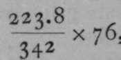

Osmotic Pressure
Description
This section is from the book "Modern Chemistry", by William Ramsay. Also available from Amazon: Modern Chemistry: Theoretical and Modern Chemistry (Volume 2).
Osmotic Pressure
The partial pressure of the dissolved substance in a solution has been measured by a similar plan, devised by the German botanist Pfeffer. It was necessary for this purpose to discover a " semi-permeable membrane," through the pores of which water could pass freely, but which would be impermeable to the dissolved substance. A slimy precipitate, produced by adding potassium ferrocyanide to copper sulphate, is not permeated by dissolved sugar, though water freely penetrates it. But a diaphragm of this nature is far too tender to withstand any pressure. Pfeifer succeeded in depositing the slimy ferrocyanide of copper in the interior of the walls of a pot of porous unglazed earthenware, and so constructing a vessel which could be closed with a glass stopper, with the help of cement. The stopper, which was hollow, was placed in connection with a gauge containing mercury; and after the pot and stopper had been filled with a solution of sugar, the stopper was connected with the gauge, which thus registered the pressure upon, and consequently exerted by, the liquid. The pot was then immersed in a large vessel of water, which could be heated to any desired temperature, not too high to soften the cement. It was found that the water slowly entered the pot, and consequently raised the mercury in the gauge ; but after a certain quantity had entered, the ingress of water stopped, and the pressure ceased to rise.
The pressure thus raised has been termed " osmotic pressure." The numbers which follow were obtained by Pfeffer :—
Concentration. | Pressure. | Ratio. |
I per cent. | 53-5 cms- | 53-5 |
2 " " | 101.6 „ | 50.8 |
4 " " | 208.2 „ | 52.1 |
6 " " | 307-5 n | 5i-3 |
When a gas occupying a certain volume is increased in quantity by pumping in an equal volume of gas, it is clear that the number of molecules in the volume is doubled ; and experiment shows that, in accordance with Boyle's law, the pressure is doubled. The concentration of a solution is expressed by the weight of dissolved substance in 100 parts of the solution; and it is evident from Pfeffer's numbers that, on doubling the number of molecules of sugar in a given volume of the solution, the osmotic pressure is also doubled. The osmotic pressure, in fact, increases directly as the concentration, exactly as with gases.
Pfeffer also made experiments at different temperatures. Owing to the softening of the cement with which the semipermeable pot was closed, he was not able to use high temperatures ; but some of his results are given below :—
Temperature | Temperature | Pressure | |
C. | Abs. | Pressure. | Calculated. |
I4.2° + 273 | - 287.2° | 51.0 cms. | 51.0 cms. |
'5-5° » | = 288.5° | 52.1 „ | |
32.00 „ | = 3°5-o° | 54-4 » | 54-1 H |
36.00 „ | = 3°9-°° | 56-7 » | 54-9 » |
The results are meagre, but, so far as they go, in reasonably good accord. Experiments of this kind have seldom been made, owing to the difficulty in preparing satisfactory membranes. The calculation has been made on the assumption that the osmotic pressure, like the gaseous pressure, increases directly as the absolute temperature.
A striking proof of the correctness of the analogy between osmotic and gaseous pressure is derived from the following consideration: A gram of oxygen gas, measured at o° C. and 76 cms. pressure, has been found to occupy 699.4 cc. ; now, 32 grams of oxygen form a gram-molecule, for the atomic weight of oxygen is 16, and there are two atoms of oxygen in a molecule of the gas, as we have seen on p. 13. The volume of 32 grams is accordingly 699.4x32 = 22,380 cc. The simplest formula for cane-sugar is C12H22On, and as the atomic weight of carbon is 12, the molecular v/eight of sugar is at least (i2x 12) + (22 x 1) 4- (11 x 16) = 342. If it were possible for cane-sugar to exist in the state of gas, it might be expected that 342 grams in 22,380 cc. would exert the same pressure as 32 grams of oxygen, viz., 76 cms., since 342 grams of sugar are likely to contain as many molecules as 32 grams of oxygen. But sugar chars when heated, and decomposes. However, it is possible to calculate, by means of Boyle's and Gay-Lussac's laws, the pressure which a i1per cent, solution of sugar ought to exert at 14.20 C. If there were 223.8 grams in 22,380 cc, the solution would be one of 1 per cent. And the pressure which it should exert would be  , or 51.66 cms. at o° C, or 2730 Abs. And at 14.20 C, or 287.2° Abs., this pressure should be increased in the proportion 273 : 287.2 ; giving a theoretical pressure of 52.5 cms.; the actual pressure measured was 51 cms.—a fairly close approximation. It may, therefore, be taken that sugar in solution in water exerts the same osmotic pressure on the walls of a semipermeable vessel, as the same number of molecules would do, if it were in the state of gas, occupying the same volume, and at the same temperature.
Experiments with semi-permeable diaphragms arc very difficult; the diaphragm seldom receives sufficient support from the pipe-clay walls of the pot, and is usually torn when the pressure rises to even a very moderate degree. But it is not necessary to attempt such measurements; for the Dutch chemist, J. H. van't Hoff, now Professor of Physical Chemistry in Berlin, pointed out in 1887 that very simple relations exist between the osmotic pressure of solutions and the lowering of the freezing-point of the solvent, due to the presence of the dissolved substance, and also the rise of boiling-point of the solvent, produced by the same cause. A proof of this connection will not be attempted here, but the facts may be shortly stated.
Continue to:
- prev: Dalton's Law Of Partial Pressures
- Table of Contents
- next: Measurement Of Osmotic Pressure By Lowering Of Freezing Point